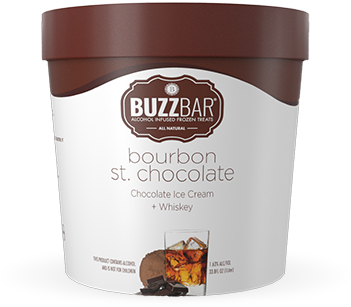
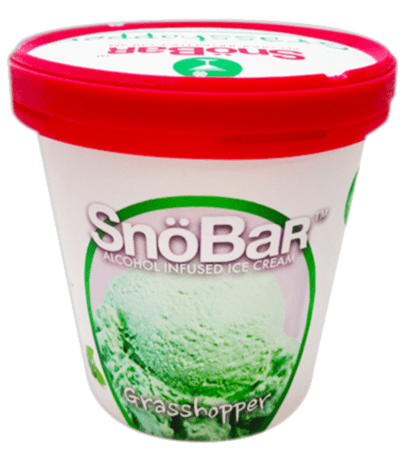
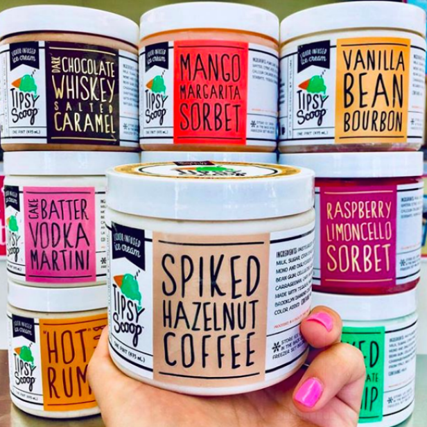

About

Do you LOVE ice cream?
Do you love ALCOHOL infused ice cream so much that you would eat it for breakfast, lunch, dinner, second breakfast, and so on? Or maybe you already do? Then check out Ice Cream of the Month Clubs and meet other people in the community who share the same interests.
Fun Facts about Ice Cream!
* Ice cream was first invented in seventh-century China, where King Tang of Shang had a group of “ice men” create a cold dessert made from buffalo milk, flour, and camphor.
* One of the most bizarre ice cream flavors is hot dog flavored ice-cream, created in Arizona, US.
* Heladería Coromoto, commonly known as Coromoto, is a popular ice cream parlor in Merida, Venezuela, renowned for offering a staggering Guinness World Record of 860 flavors.
* William Dreyer, of Dreyer’s Ice Cream, is thought to be the original concoctor of Rocky Road in 1929. Partnering with candy maker Joseph Edy, he debuted the first incarnation of the now-famous flavor in Oakland, California.
* King Charles, the First of England, paid his chef £500 a year to keep his ice cream recipe a secret.
Sounds like a PaRtY!!!
“Edible inventor” Charlie Harry Francis has created a champagne-flavored ice cream that is laced with 25 mg of Viagra.
21+
Wavering between ice cream and a cocktail?
You can have both;
chefs have concocted alcoholic ice creams with tequila, whiskey, and bourbon, among others.



© 2022 Freeeze. Brandi Woods CITPT225 All Rights Reserved.